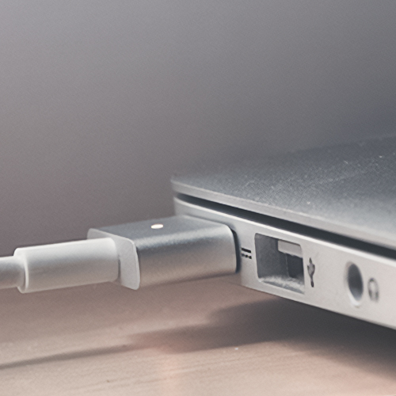
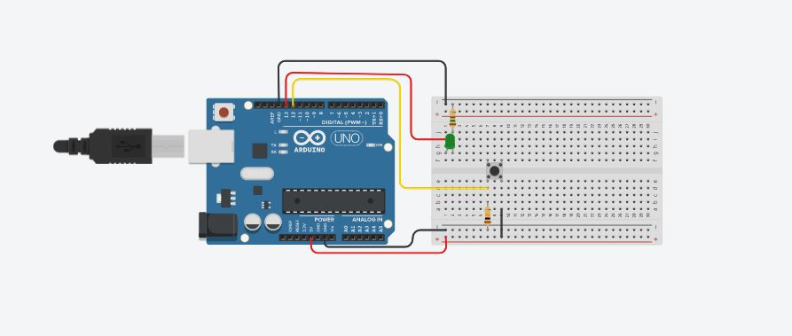

Este projeto escolar, intitulado "Circuito Botão-LED", foi desenvolvido pelos alunos Oliveira, Arthur Zuliani, Eduardo Antonio, Giorgio e Carlos Eduardo como parte da disciplina de Robótica. O objetivo do projeto era aprender sobre eletrônica básica, desenvolver habilidades de montagem de circuitos e criar um sistema simples que envolvesse a interação entre o precionar de um botão e um LED.
No contexto da crescente importância da robótica e da automação no mundo contemporâneo, a compreensão dos princípios básicos de eletrônica, um pouco de código e a capacidade de criar circuitos simples são maneiras de começar a desenvolver habilidades essenciais. Nesse sentido, o projeto visa proporcionar aos alunos uma experiência prática e educativa, incentivando-os a explorar os fundamentos da eletrônica e programação enquanto trabalhavam em time.
Componentes que vamos usar
Arduino
Arduino é uma plataforma de prototipagem eletrônica que se tornou extremamente popular e amplamente utilizada em projetos de robótica, arte interativa etc. É baseado em uma placa de hardware de código aberto, com um microcontrolador programável e uma série de pinos de entrada e saída.
Breadboard
É uma placa de plástico com orifícios que permitem a montagem temporária de circuitos eletrônicos. Ela possui trilhas condutoras internas que permitem a conexão dos componentes sem a necessidade de soldagem, tornando a montagem rápida e flexível.
Push Button
É um componente que permite a abertura ou o fechamento de um circuito elétrico quando pressionado. Ele possui dois ou mais terminais que se conectam quando o botão é pressionado e se desconectam quando ele é liberado.
LED (Light Emitting Diode)
É um diodo emissor de luz, um componente eletrônico que emite luz quando uma corrente elétrica passa por ele. Os LEDs são amplamente utilizados como indicadores luminosos em circuitos eletrônicos.
Resistor
É um componente eletrônico que limita o fluxo de corrente em um circuito. Ele é usado para controlar a quantidade de corrente que passa por outros componentes, como LEDs, evitando danos causados por correntes muito altas.
Fio jumper (jump wire)
São fios condutores pré-fabricados, geralmente flexíveis e com conectores em suas extremidades, que permitem a conexão dos componentes eletrônicos em uma placa de prototipagem ou breadboard de forma rápida e prática.

Bateria de laptop (Energia)
A bateria de laptop é um componente essencial na montagem do circuito Botão pressionar e LED, pois fornece a fonte de energia necessária para o funcionamento do circuito. Ela é conectada ao Arduino por meio de cabos.
Montagem por passos
1. Organizar o material que será usado
2. Conectar a perna do botão na posição e7 e a outra na posição e9 do breadboard
3. Conectar um resistor de 150 ohms na posição 2j a linha horizontal negativa e outro de 10k ohms na posição 7b a linha horizontal negativa
4. Conectar ânodo do LED verde na cordenada g2 do breadboard
5. Conectar cabo jumper no ground (GND), está a esquerda da porta 13, do Arduino na linha horizontal negativa superior
6. Conectar cabo jumper na porta 13 do Arduino na cordenada i2, logo abaixo do resistor
7.
Conectar cabo jumper na porta 12 do Arduino na cordenada d7, logo abaixo da perninha inferior esquerda do pushbutton
8. Conectar cabo jumper na linha horizontal positiva inferior a cordenada a9
9. Conectar cabo jumper no ground (GND), está a esquerda de Vin, do Arduino na linha horizontal negativa superior
10. Conectar cabo jumper na porta 5V do Arduino na linha horizontal positiva inferior
Resultado final do circuito

Dando vida ao circuito
Os códigos que serão utilizados para dar vida ao circuito usando a linguagem de programação C++. O C++ é uma linguagem amplamente utilizada em desenvolvimento de software, conhecida por sua eficiência, flexibilidade e poder. No contexto dos circuitos eletrônicos, o C++ é frequentemente empregado para programar microcontroladores, que desempenham um papel crucial no controle e na automação de dispositivos eletrônicos. Esses microcontroladores podem ser encontrados em uma ampla gama de dispositivos, desde eletrodomésticos inteligentes até sistemas embarcados em carros e aviões.
// C++ code
int on_off = 0;
int button = 0;
void setup()
{
pinMode (13, OUTPUT);
pinMode (12, OUTPUT);
pinMode (12, INPUT);
digitalWrite(13, LOW);
digitalWrite(12, LOW);
on_off = LOW;
}
void loop()
{
button = digitalRead (12);
if (button == HIGH) {
if (on_off == LOW) {
digitalWrite(13, HIGH);
on_off= HIGH;
} else {
digitalWrite(13, LOW);
on_off = LOW;
}
}
delay(10); // Delay a little bit to improve simulation
}